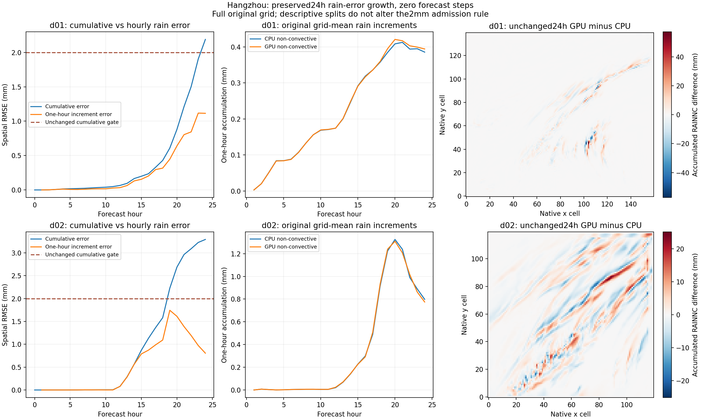
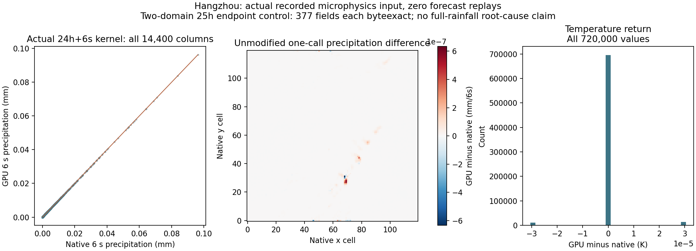

HANGZHOU · NUMERICAL VALIDATION · DATED SNAPSHOT
The 24-hour rainfall check exceeds 2 mm.
These tests diagnose the separate Vancouver-style regional-weather revision. The 17 published films preserve the original prompt-sequence models and their documented limits.
What was compared
N is every original physical grid cell; R is accumulated RAINNC in mm. The limit applies separately to each hourly frame. It is not an upper bound on individual-cell error or a 15-day forecast error guarantee.

Vector figure · All25 hours CSV

| Domain | Hour | RMSE(mm) | Largest cell difference(mm) | 2 mm gate |
|---|---|---|---|---|
| d01 | 19 | 0.608793 | 15.595778 | PASS |
| d01 | 20 | 0.879814 | 19.542234 | PASS |
| d01 | 21 | 1.211713 | 25.979401 | PASS |
| d01 | 22 | 1.502008 | 29.680468 | PASS |
| d01 | 23 | 1.904356 | 45.739027 | PASS |
| d01 | 24 | 2.189254 | 57.226511 | FAIL |
| d02 | 19 | 2.226424 | 25.638334 | FAIL |
| d02 | 20 | 2.685840 | 25.263903 | FAIL |
| d02 | 21 | 2.962375 | 25.284064 | FAIL |
| d02 | 22 | 3.089208 | 25.267078 | FAIL |
| d02 | 23 | 3.226646 | 25.225186 | FAIL |
| d02 | 24 | 3.292000 | 25.160477 | FAIL |
The hourly decomposition reproduces all original full-grid RMSE values. Child-grid rain differences grow after hour 12, with largest MSE growth around 19–21h. Only 6.94% of its 24h squared error lies in the fixed outer five-cell frame; this descriptive split does not replace the full qualification mask.
Actual input, not an hourly reconstruction
A neutral 24→25h continuation and an observed continuation used the same authenticated 24h carry. Both exited successfully. At 25h, all 377 numeric fields in each domain were byteexact. One finite kernel packet and one finite driver packet were captured at child step 14401(24h+6s).
The initial validator incorrectly expected the branch to re-emit a 24h history frame. Official restart output suppresses that frame. The failure is retained; the successful neutral run was reused after parent payload/manifest SHA, all identity entries, own steps 4800/14400 and unchanged-carry consistency were verified. No missing history comparison is labeled passed.


All isolated GPU returns reproduce the actual recorded call byteexactly. Against the original compiled native kernel: rainfall-increment RMSE 1.37095×10⁻⁸mm/6s; temperature RMSE 5.60046×10⁻⁶K. All original physical columns are included. A common horizontal storage permutation is proved byteexact for all 13 native input arrays and decoded back to original indices; no rain values are fitted or corrected.
Selected driver and moist-theta returnAll 30 recorded preparation/copyback/accumulator fields, all five phase arrays and six unchanged pressure/geometry/mass/w fields reproduce byteexactly. Dynamic common inputs reproduce the actual theta output; the compiled native moist-theta return then matches all 720,000 values exactly, including the actual boundary ownership.
A preliminary constant-evaluated common-input calculation produced a spurious 1.58×10⁻⁵K comparison difference. It is retained and superseded by the dynamic-input control. No physics was patched to remove it.
θd is dry potential temperature; θm is moist potential temperature; qv is water-vapor mass mixing ratio. The native perturbation representation subtracts 300 K. This comparison tests selected recorded driver behavior and return algebra, not the entire native driver.
What this does not establish
No dominant local kernel or moist-theta-return defect was identified in this call. Upstream physics, splitting, radiation/optical radii, later precipitation handling, cumulative sensitivity and the full rainfall budget remain unresolved. One 6 s error is not multiplied by 600 to predict an hourly error.
The original 2 mm criterion, fixed CPU reference, masks and failure artifacts remain unchanged. No rainfall calibration, clipping, new 24h candidate or automatic 360h production was launched. The separate native 23h transport/UI case is engineering evidence, not a 15-day result.
English figures · static, traceable snapshot · original versions preserved · no new forecast from this report